Semua urusan booth Anda dalam satu tempat: tanda tangan kontrak, pantau pembayaran, dan pesan layanan booth seperti listrik, furnitur, internet, dan badge.
BoothB12
1Tanda tangan kontrakIsi data PIC, unggah kontrak yang sudah ditandatangani
2Bayar boothLihat yang sudah dibayar dan yang masih harus dibayar
3Pesan layanan boothIsi order form, lalu submit sebelum tenggat
Contoh di panduan ini memakai pameran PERAGA Expo 2027 dan perusahaan PT Maju Tekstil Nusantara. Data Anda sendiri akan tampil di portal Anda.
0
Sebelum mulai
Apa yang perlu disiapkan dan isi panduan ini.
Yang Anda butuhkan
Email undangan dari sales PERAGA Expo. Isinya tautan untuk membuat password.
Kontrak booth yang sudah ditandatangani, dalam bentuk PDF (maksimal 10 MB).
Denah booth bila form meminta lokasi pemasangan (PDF, JPG, atau PNG).
Komputer atau HP dengan browser terbaru (Chrome, Safari, Edge, atau Firefox).
Kata-kata di layar
Tampilan portal memakai bahasa Inggris. Di panduan ini, tombol dan label ditulis persis seperti di layar, misalnya Review and Submit, supaya mudah dicari.
Status ditulis seperti ini: Approved. Arti semua status ada di bab 9.
Isi panduan
1
Masuk ke portalMembuat password dari email undangan, lalu masuk setiap kali
2
Halaman pameran (Home)Menu, ringkasan pameran, dan langkah berikutnya
3
Tanda tangan kontrakIsi data PIC dan unggah kontrak yang sudah ditandatangani
4
Pembayaran boothMembaca total, yang sudah dibayar, dan sisa tagihan
5
Order Forms: memesan layanan boothMemilih barang, item tambahan, lampiran, simpan dan submit
6
Setelah pesanan di-submitDikembalikan, disetujui, dan pembayaran pesanan
7
Form pertanyaan dan form yang tidak dibutuhkanBadge, visa, dan cara menandai form yang tidak Anda perlukan
8
Memakai portal di HP
9
Arti status dan pertanyaan umum
1
Masuk ke portal
Pertama kali lewat email undangan, selanjutnya cukup email dan password.
Pertama kali: buat password
Setelah booth Anda dikonfirmasi, sales PERAGA Expo mengirim email undangan berisi tautan. Tautan ini hanya berlaku untuk akun Anda.
Buka tautan di email undangan. Halaman Set Your Password akan terbuka dengan email Anda.
Isi New Password minimal 8 karakter. Hindari password yang mudah ditebak.
Ketik password yang sama di Confirm Password.
Klik Set Password and Sign In. Anda langsung masuk ke portal.
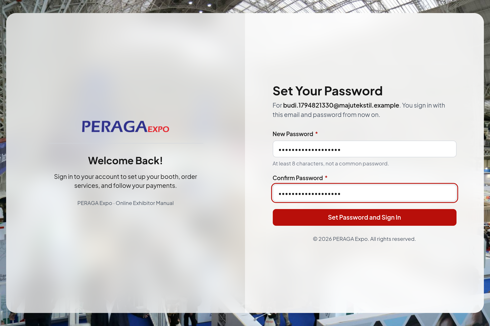
Halaman membuat password dari email undangan
Masuk berikutnya
Buka alamat portal dari sales, isi Email dan Password, lalu klik Sign In.
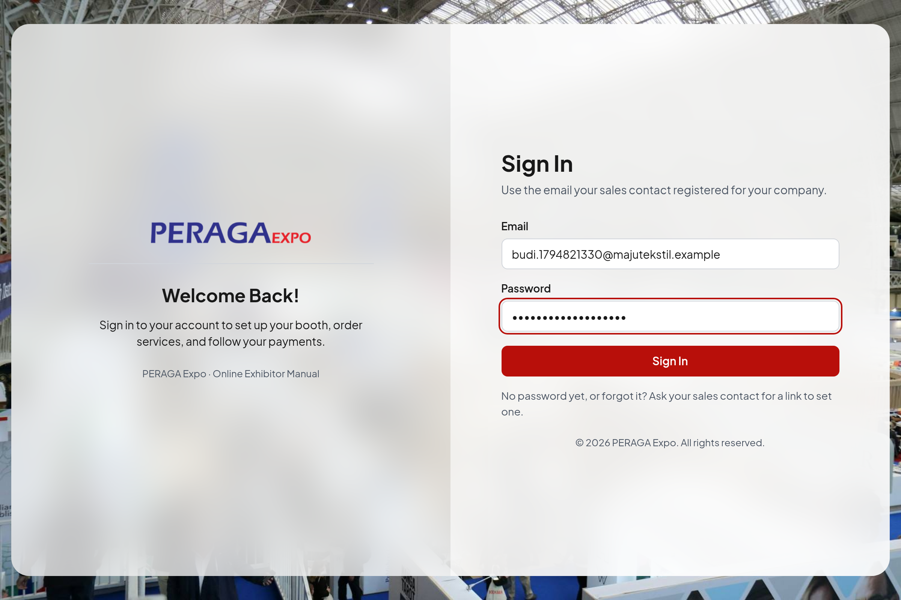
Halaman Sign In
Lupa password atau tautan sudah kedaluwarsa?Hubungi sales PERAGA Expo. Mereka akan mengirim tautan baru untuk membuat password.
My Exhibitions
Setelah masuk, Anda melihat semua pameran yang Anda ikuti. Setiap kartu menunjukkan logo dan tanggal pameran, hitung mundur (Starts in 40 days), nomor booth Anda, dan status kontrak. Klik kartu untuk membuka pameran.
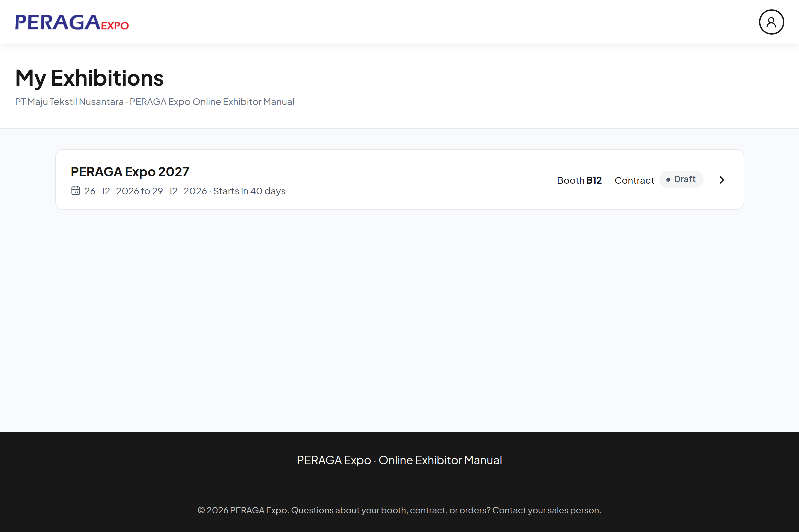
Daftar pameran Anda
2
Halaman pameran (Home)
Ringkasan pameran Anda dan menu ke semua bagian portal.
Di bagian atas setiap halaman ada logo PERAGA Expo dan menu:
Home: halaman ini.
Contract & Payments: tanda tangan kontrak dan pembayaran booth (bab 3 dan 4).
Order Forms: memesan layanan booth (bab 5).
Ikon orang di kanan atas: email akun Anda dan tombol Sign Out untuk keluar.
Di Home ada nama dan tanggal pameran, kotak Welcome dengan nomor booth dan langkah berikutnya (Next step), tautan ke Contract dan Booth Payments beserta statusnya, kotak Order Forms (berapa form yang belum diisi, sedang diisi, dan sudah di-submit), serta tanggal pameran.
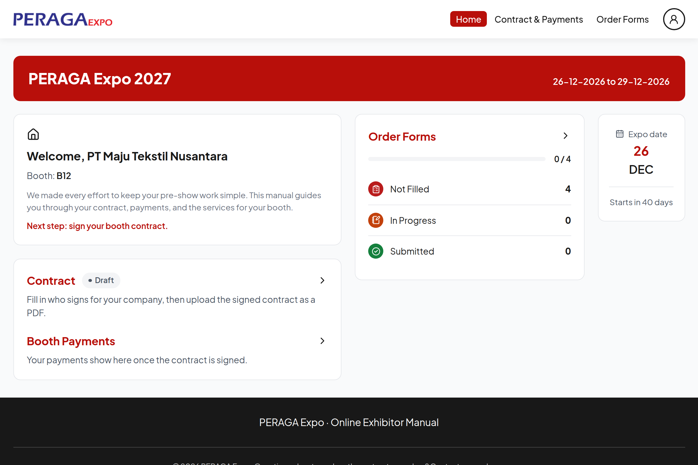
Home sebelum kontrak ditandatangani
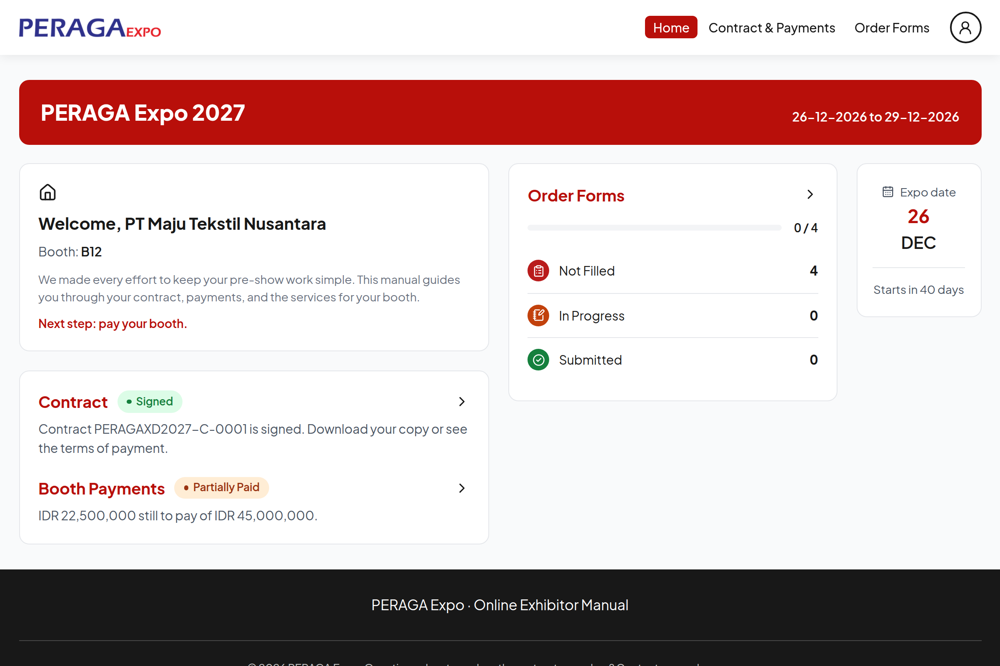
Home setelah kontrak ditandatangani dan sebagian dibayar
Boleh langsung pesan layanan?Boleh. Anda bisa mengisi dan submit order form kapan saja. Namun pesanan yang berbayar baru disetujui setelah kontrak booth ditandatangani.
3
Tanda tangan kontrak
Dua bagian: data kontrak, lalu kontrak yang sudah ditandatangani.
Klik menu Contract & Payments, atau tautan Contract di Home.
Bagian 1: Contract Details
Isi PIC Name, yaitu nama orang yang menandatangani kontrak untuk perusahaan Anda.
Isi Tax ID (NPWP) bila ada. Kolom ini boleh dikosongkan.
Isi Company Address, yaitu alamat perusahaan untuk kontrak.
Klik Save Details. Muncul pesan hijau Contract details saved.
Bagian 2: Signed Contract
Tanda tangani kontrak yang dikirim sales Anda, lalu simpan sebagai PDF (maksimal 10 MB).
Di Signed PDF (up to 10 MB), pilih file PDF tersebut.
Klik Upload Signed Contract.
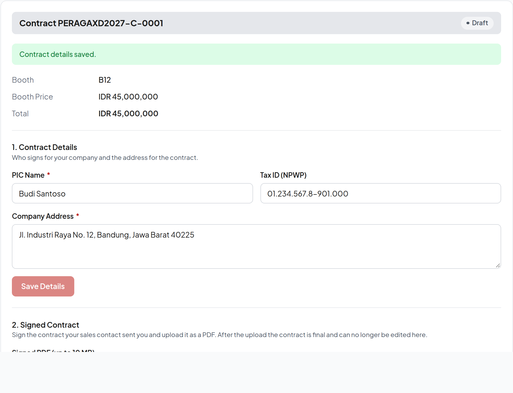
Data kontrak sudah disimpan, siap mengunggah kontrak yang ditandatangani
Periksa dulu sebelum mengunggahSetelah kontrak yang ditandatangani diunggah, kontrak menjadi final dan tidak bisa diubah lagi di portal. Bila ada yang salah, hubungi sales Anda.
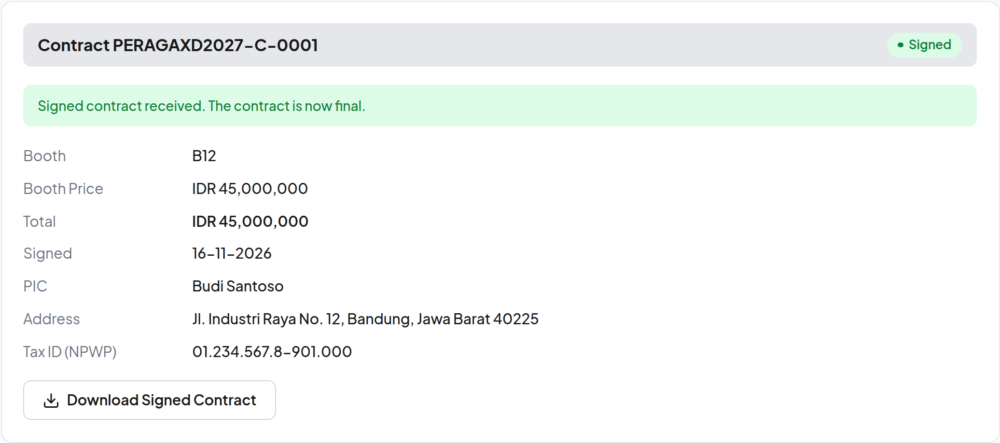
Kontrak berstatus Signed. Anda bisa mengunduhnya kembali kapan saja.
Harga dari quotationBila harga booth Anda disepakati lewat quotation dari sales, kontrak juga menampilkan VAT (PPN), nomor Quotation, dan Terms of payment: tiap termin dengan jumlah dan tanggalnya. Total kontrak sudah termasuk PPN.
4
Pembayaran booth
Pantau yang sudah dibayar dan sisa tagihan.
Bagian Booth Payments muncul setelah kontrak ditandatangani. Portal tidak menerima pembayaran langsung: Anda membayar lewat transfer bank, lalu tim PERAGA Expo mencatat dan memeriksa pembayaran itu. Hasilnya tampil di sini.
Cara membayar booth
Pastikan kontrak sudah berstatus Signed (bab 3). Sebelum itu belum ada tagihan.
Lihat jumlah yang harus dibayar di Total dan Outstanding. Bila kontrak memakai termin, jumlah dan tanggal tiap termin tertulis di Terms of payment pada kontrak.
Transfer ke rekening yang tertulis di instruksi pembayaran dari tim PERAGA Expo. Bayar penuh atau per termin.
Kirim bukti transfer ke sales Anda (PDF, JPG, atau PNG). Satu pembayaran boleh punya sampai 5 file bukti, misalnya bila dibayar dengan beberapa kali transfer.
Tim kami mencatat pembayaran itu, statusnya Pending. Setelah dicocokkan dengan mutasi bank, statusnya menjadi Verified dan Outstanding berkurang.
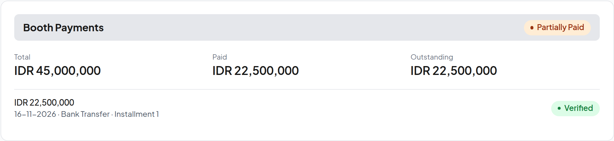
Booth Payments: total, sudah dibayar, dan sisa
Yang tampil
Artinya
Total
Harga booth sesuai kontrak.
Paid
Jumlah yang sudah diterima dan diperiksa.
Outstanding
Sisa yang masih harus dibayar.
Pending
Pembayaran sudah dicatat dan sedang diperiksa.
Verified
Pembayaran sudah diterima.
Sudah transfer tapi belum muncul?Pembayaran tampil setelah dicatat oleh tim PERAGA Expo. Kirim bukti transfer ke sales Anda supaya cepat diproses. Anda tidak perlu mengisi apa pun di portal untuk pembayaran.
5
Order Forms: memesan layanan booth
Listrik, furnitur, internet, badge, parkir, dan lainnya.
Daftar form
Klik menu Order Forms. Setiap baris adalah satu form dengan tanggal tenggat (Deadline Date), sisa waktu (Time Left), dan statusnya.
Bilah di kanan atas (misalnya 2 / 4) menunjukkan berapa form yang sudah selesai.
Cari form dengan kolom pencarian, atau saring dengan All FormsNot FilledIn ProgressSubmitted.
Klik Start Form, Continue Form, atau View Form untuk membuka form. Tombol di kanan pencarian mengganti tampilan daftar dan kartu.
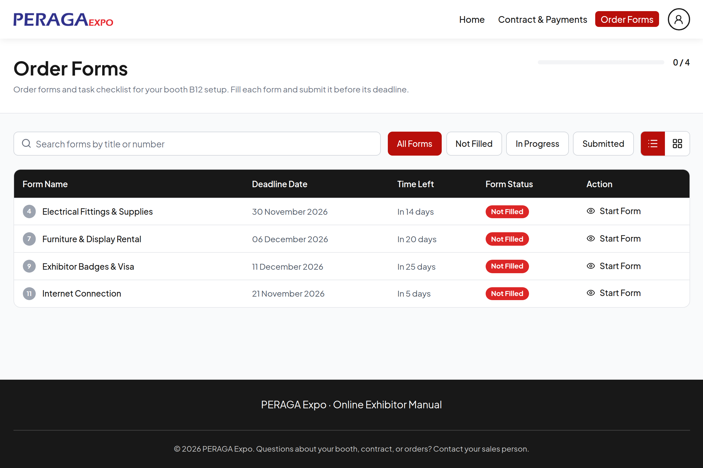
Daftar Order Forms
Bagian atas form
Di atas form ada nama dan nomor form serta statusnya. Kotak merah di kanan atas menunjukkan tanggal tenggat dan sisa waktunya. Di sebelah kiri ada daftar semua form: klik untuk pindah form, dan tanda centang hijau berarti form itu sudah selesai. Baca juga kotak Notes: isinya ketentuan dari panitia, misalnya soal pemasangan atau pembatalan.
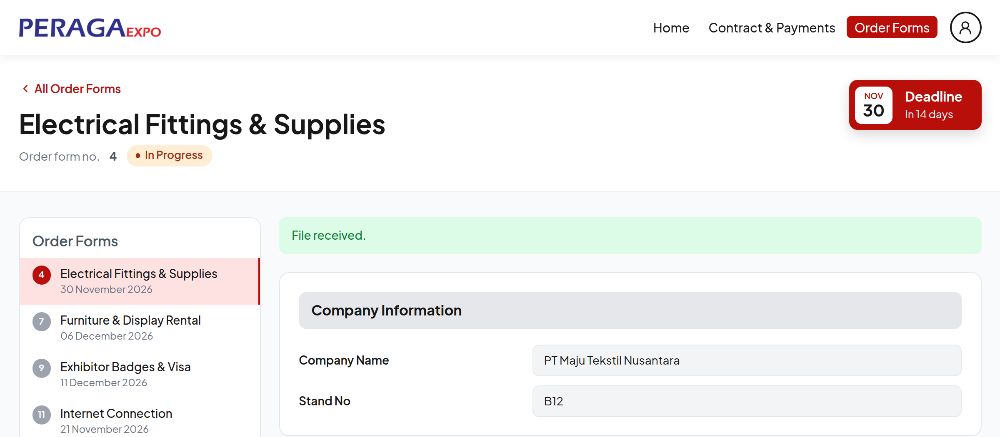
Form 04 Electrical Fittings & Supplies
Memilih barang (Items)
Ketik jumlah di kolom Quantity untuk setiap barang yang Anda perlukan. Kosongkan atau isi 0 untuk barang yang tidak dipesan.
Amount dan Total langsung dihitung dari harga hari ini.
Tulisan Up to 10 berarti batas maksimal per pesanan.
Bila panitia menyertakan foto barang, foto tampil di sebelah kiri nama barang.
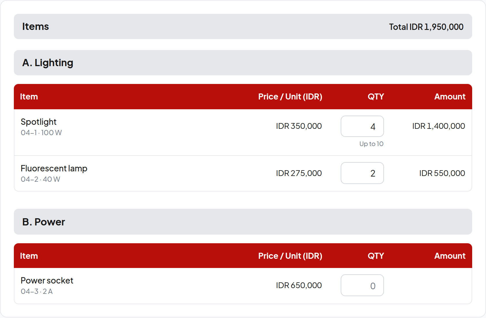
Barang dari katalog, dikelompokkan per bagian
Harga bisa naik mendekati pameranAda tiga periode harga: Regular, Surcharge, dan Onsite. Harga dikunci pada hari Anda submit pesanan, jadi submit lebih awal agar dapat harga Regular.
Permintaan khusus (Notes / Remarks)
Yang bisa dipesan hanya barang yang ada di daftar. Bila Anda punya permintaan khusus, misalnya waktu pemasangan atau posisi barang, tulis di kolom Notes / Remarks di bagian bawah form. Panitia membacanya saat memeriksa pesanan.
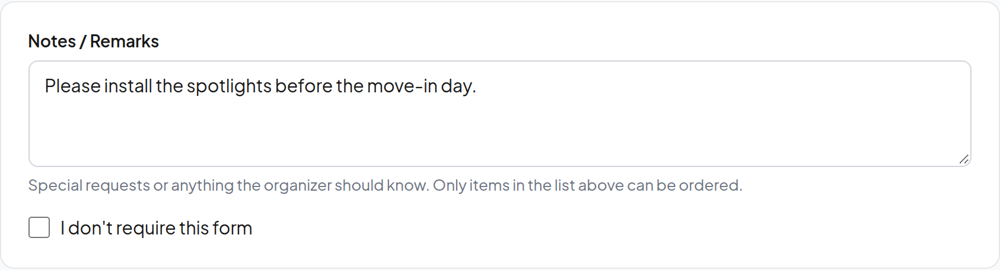
Kolom Notes / Remarks, dan di bawahnya pilihan I don't require this form
Lampiran (Attachments)
Beberapa form meminta lampiran, misalnya Fitting Location: denah booth dengan titik pemasangan yang ditandai. Pilih file, lalu klik Upload. File yang sudah diunggah tampil sebagai tautan dan bisa dihapus selama pesanan belum di-submit.
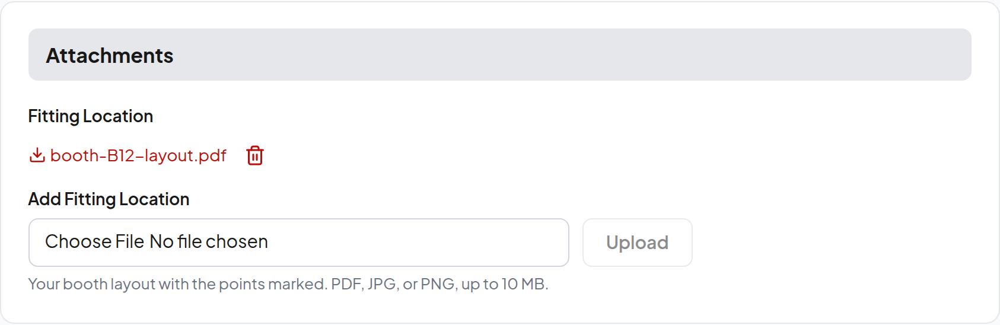
Denah booth sudah terlampir
Tombol simpan dan submit
Bilah tombol selalu menempel di bawah layar, berisi perkiraan total dan tiga tombol:
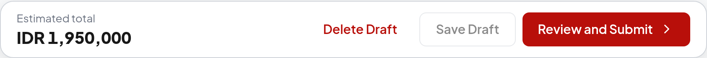
Tombol
Fungsinya
Save Draft
Menyimpan isian tanpa submit. Draft hanya bisa dilihat oleh Anda, dan bisa dilanjutkan kapan saja sebelum tenggat.
Review and Submit
Membuka ringkasan pesanan untuk diperiksa sebelum di-submit.
Delete Draft
Menghapus draft dan mulai dari awal.
Jangan lewat tenggatSetelah tanggal tenggat, pesanan tidak bisa di-submit lagi. Simpan draft lebih awal, lalu submit sebelum tenggat.
Periksa lalu submit
Setelah klik Review and Submit, Anda melihat ringkasan pesanan: barang, jumlah, harga, lampiran, dan catatan. Periksa sekali lagi.
Ada yang salah? Klik Change Order untuk kembali mengubah isian.
Sudah benar? Klik Submit Order. Ini langkah terakhir.
Setelah Submit Order, pesanan tidak bisa diubah lagiPesanan terkunci supaya panitia memeriksa isian yang pasti. Bila mendadak ada perubahan, hubungi sales Anda. Panitia bisa membuka kembali pesanan untuk Anda (status Returned), lalu Anda ubah dan submit lagi.
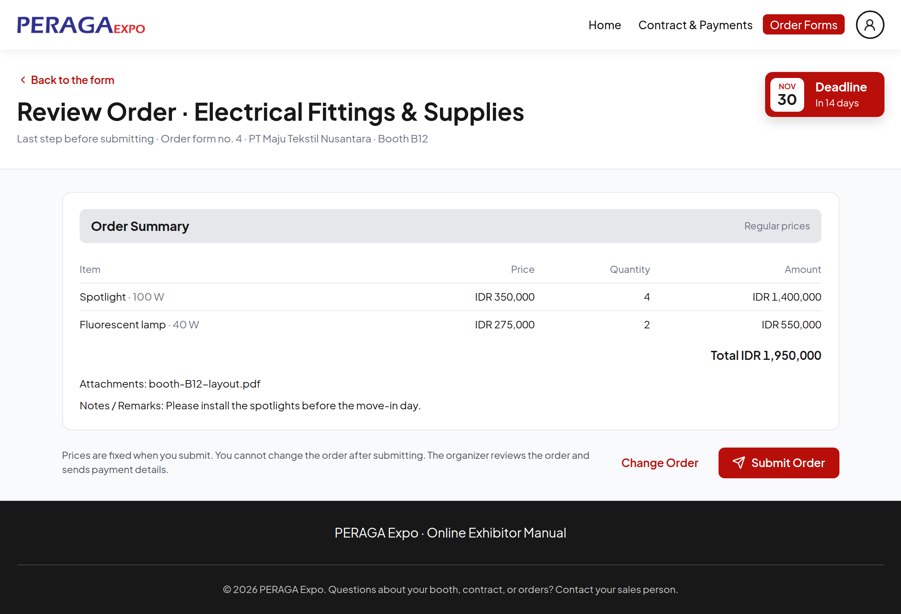
Halaman Review Order sebelum di-submit
Setelah di-submit, pesanan mendapat nomor, misalnya PERAGA2027-O-0001, dan statusnya menjadi Submitted. Panitia akan memeriksa pesanan dan mengonfirmasi totalnya.
Submit bukan berarti barang dikirimSubmit artinya pesanan Anda sudah diajukan ke panitia untuk diperiksa. Status Submitted juga berarti pesanan sudah diajukan, bukan barang sudah dikirim. Barang di-supply onsite saat pameran, setelah pesanan disetujui dan dibayar.
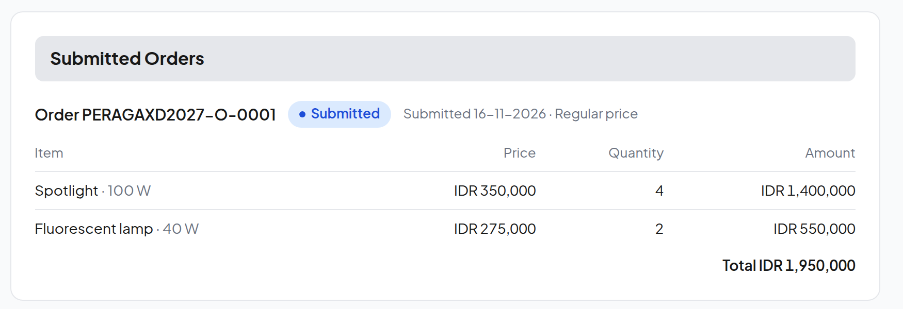
Pesanan sudah di-submit dan mendapat nomor pesanan
Butuh barang lagi setelah submit?Pesanan yang sudah di-submit tidak bisa diubah. Klik Order More untuk membuat pesanan baru di form yang sama.
6
Setelah pesanan di-submit
Panitia memeriksa, lalu menyetujui atau mengembalikan pesanan.
Pesanan dikembalikan Returned
Bila ada yang perlu diubah, panitia mengembalikan pesanan dengan pesan di kotak kuning di atas form. Ubah sesuai pesan tersebut, lalu submit lagi lewat Review and Submit. Nomor pesanan tetap sama.
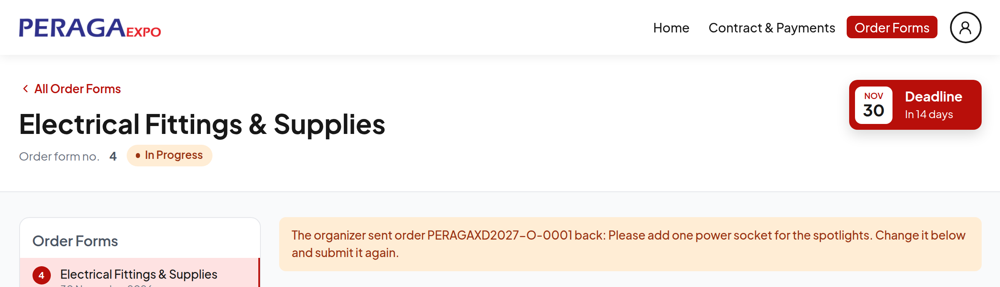
Pesan dari panitia: tambahkan satu stop kontak untuk spotlight
Pesanan disetujui Approved
Setelah disetujui, total pesanan sudah final. Bayar sesuai tagihan (invoice) dari tim finance PERAGA Expo, dengan cara yang sama seperti pembayaran booth. Bagian Submitted Orders menunjukkan rincian, jumlah yang sudah dibayar, dan sisa yang harus dibayar (Still to pay).
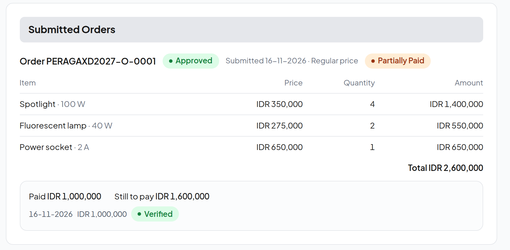
Pesanan disetujui dan sebagian sudah dibayar
Pesanan berbayar menunggu kontrakBila pesanan Anda berbayar tetapi kontrak booth belum ditandatangani, pesanan menunggu dulu. Setelah kontrak ditandatangani, panitia bisa menyetujuinya.
7
Form pertanyaan dan form yang tidak dibutuhkan
Tidak semua form berisi barang.
Form pertanyaan, contoh: badge dan visa
Beberapa form berisi pertanyaan, misalnya Exhibitor Badges & Visa. Jawab pertanyaannya, lalu tambahkan nama staf penjaga booth dengan Add Badge. Kolom bertanda * wajib diisi. Cara menyimpan dan submit-nya sama seperti form lain.
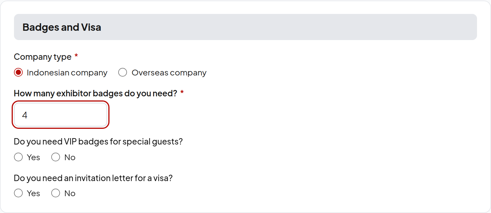
Dua badge staf sudah diisi
Form yang tidak Anda perlukan
Bila Anda tidak butuh suatu form, misalnya tidak menyewa furnitur, centang I don't require this form. Letaknya di bagian bawah setiap form, tepat di bawah kolom Notes / Remarks dan di atas tombol Save Draft dan Review and Submit. Statusnya menjadi Not Required dan form itu dihitung selesai. Hapus centang bila Anda berubah pikiran.
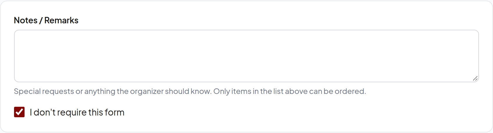
Pantau semua form
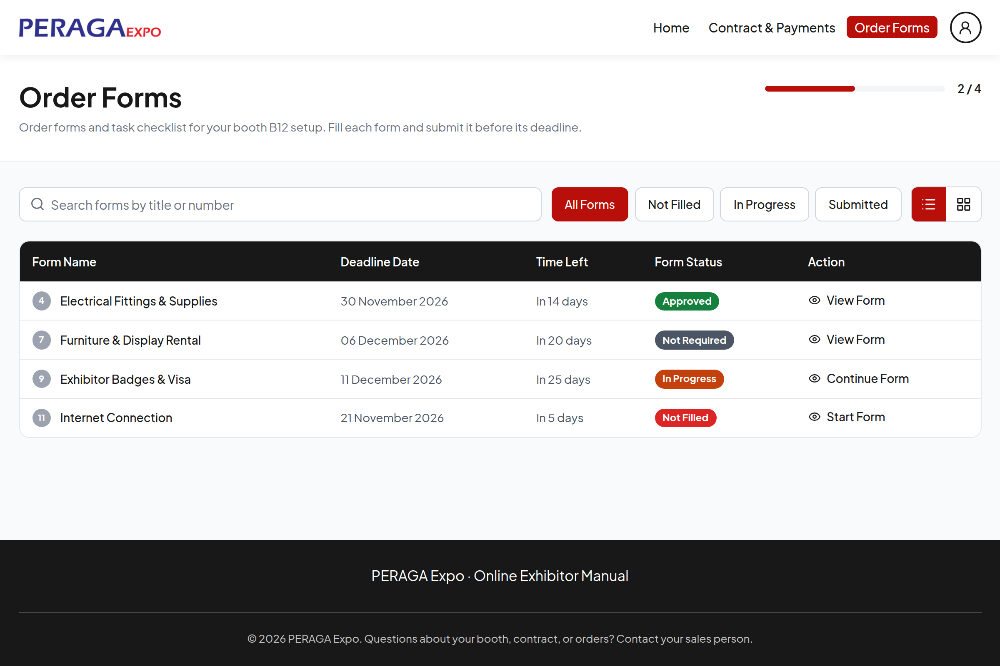
Dua dari empat form selesai: satu disetujui, satu tidak dibutuhkan
8
Memakai portal di HP
Semua langkah bisa dilakukan dari HP.
Buka alamat portal yang sama di browser HP. Tampilan menyesuaikan layar: menu ada di tombol ☰ di kanan atas, form tampil sebagai kartu yang tersusun ke bawah, dan setiap barang tampil dengan kolom jumlah yang mudah diisi. Tombol Save Draft dan Review and Submit tetap menempel di bawah layar.
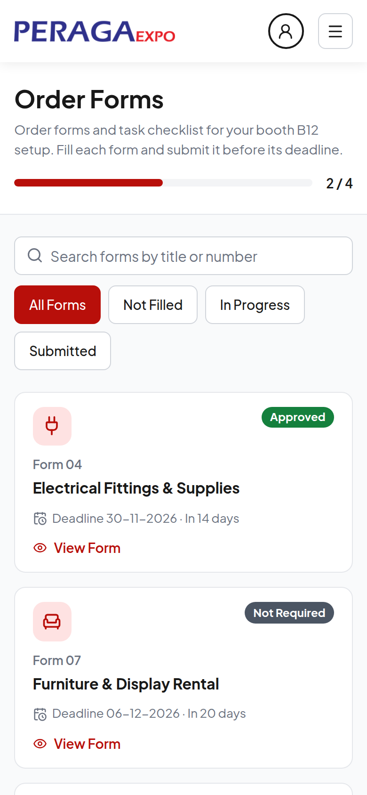
Daftar form di HP
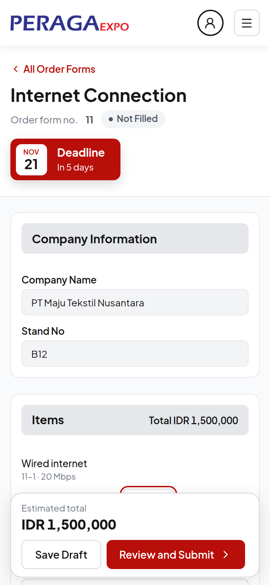
Mengisi form di HP
Mengunggah file dari HPKontrak dan denah bisa diunggah dari HP. Pastikan filenya PDF, JPG, atau PNG dan ukurannya tidak melebihi batas yang tertulis di bawah kolom unggah.
9
Arti status dan pertanyaan umum
Alur singkat pesanan
1. Isi formKlik Save Draft untuk menyimpan, atau centang I don't require this form
2. Review and SubmitRingkasan pesanan tampil untuk diperiksa
3. Submit OrderPesanan terkunci dan masuk ke panitia
4. ApprovedPanitia menyetujui, finance membuat invoice
5. BayarBarang di-supply onsite saat pameran
Status form dan pesanan
Status
Artinya
Not Filled
Form belum diisi.
In Progress
Ada draft yang belum di-submit.
Submitted
Pesanan sudah di-submit dan sedang diperiksa panitia.
Returned
Panitia meminta perubahan. Baca pesannya, ubah, lalu submit lagi.
Approved
Pesanan disetujui. Totalnya sudah final.
Not Required
Anda menandai form ini tidak dibutuhkan.
Cancelled
Pesanan dibatalkan oleh panitia.
Status kontrak dan pembayaran
Status
Artinya
Draft
Kontrak belum ditandatangani.
Signed
Kontrak yang sudah ditandatangani sudah diterima.
Unpaid
Belum ada pembayaran yang diterima.
Partially Paid
Sebagian sudah dibayar, masih ada sisa.
Paid
Lunas.
PendingVerifiedRejected
Satu pembayaran sedang diperiksa, sudah diterima, atau ditolak (misalnya salah rekening). Bila ditolak, hubungi sales Anda.
Pertanyaan umum
Apakah draft saya hilang kalau keluar dari portal?
Tidak. Draft tersimpan setelah Anda klik Save Draft. Perubahan yang belum disimpan memang hilang, jadi simpan secara berkala.
Bisakah mengubah pesanan yang sudah di-submit?
Tidak bisa diubah sendiri. Hubungi sales untuk meminta panitia membuka kembali pesanan Anda, atau buat pesanan baru dengan Order More.
Kenapa total berbeda dari perkiraan saya?
Harga dikunci pada hari Anda submit. Bila Anda submit saat periode Surcharge atau Onsite, harganya lebih tinggi dari harga Regular.
Satu perusahaan ikut beberapa pameran?
Cukup satu akun. Semua pameran Anda tampil di My Exhibitions.
Butuh bantuan?Untuk pertanyaan soal booth, kontrak, pembayaran, atau pesanan, hubungi sales PERAGA Expo yang menangani perusahaan Anda.